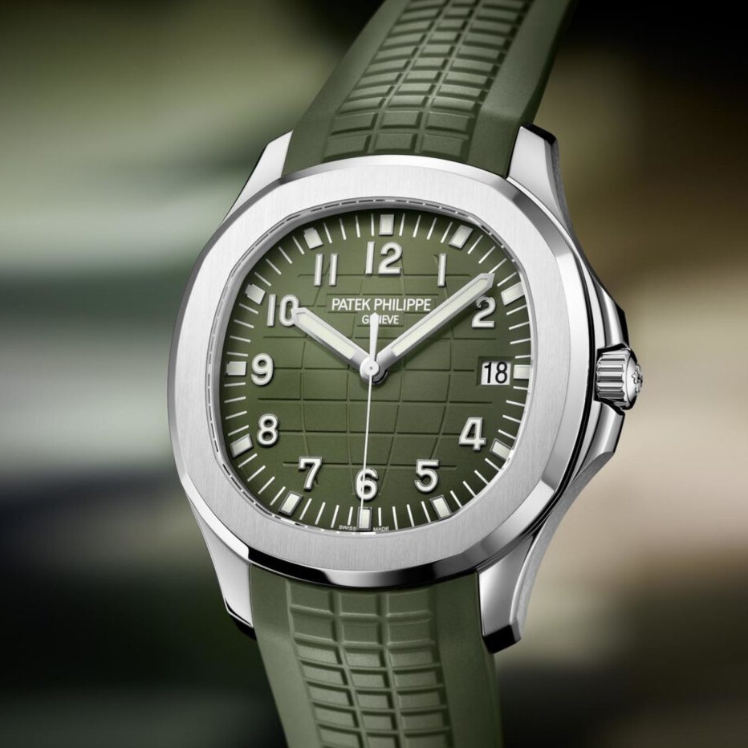

Patek Philippe Aquanaut 5168G with Khaki Green
Patek Philippe to nazwa synonimiczna z luksusowymi zegarkami. Marka istnieje od ponad 180 lat, a ich zegarki uważane są za jedne z najwyższej jakości na świecie. Jednym z najpopularniejszych zegarków w kolekcji Patek Philippe jest Aquanaut 5168G z tarczą w kolorze khaki z zielonym odcieniem. Ten zegarek jest prawdziwym dziełem szwajcarskiej sztuki zegarmistrzowskiej, a w tym wpisie przyjrzymy się bliżej temu, co sprawia, że jest tak wyjątkowy.

Design
Zacznijmy od samego wyglądu. Tarcza w kolorze khaki z zielonym odcieniem nadaje zegarkowi unikalnego charakteru. Zegarek posiada również biały obramowany indeks godzinowy i wskazówki, które są pokryte luminescencyjnym materiałem, co zapewnia łatwość odczytu czasu nawet w ciemności. Koperta zegarka wykonana jest ze 18-karatowego białego złota i ma średnicę 42,2 mm. Tarcza jest chroniona przez szafirowe szkło, które zapobiega zarysowaniom i uszkodzeniom.
Mechanizm
Co sprawia, że zegarek Aquanaut 5168G z Khaki Green Dial jest tak wyjątkowy? Po pierwsze, jego mechanizm. Zegarek jest napędzany ręcznie nakręcanym mechanizmem kalibru 324 S C, który jest jednym z najdokładniejszych mechanizmów na rynku. Chroni go również mechanizm antywstrząsowy, który zapewnia dokładność pomiaru czasu nawet w trudnych warunkach. Zegarek ma również rezerwę chodu wynoszącą 45 godzin.
Funkcje
Oprócz precyzji, Aquanaut 5168G oferuje również wiele funkcji. Zegarek posiada datownik na godzinie 3, a także stoper sekundowy, który jest przydatny do pomiaru czasu z dokładnością do jednej sekundy. Zegarek jest wodoszczelny do 120 metrów, co oznacza, że można go nosić podczas pływania i nurkowania.
Podsumowanie
Podsumowując, zegarek Patek Philippe Aquanaut 5168G z Khaki Green Dial to wyjątkowe połączenie stylu, funkcjonalności i precyzji. To idealny wybór dla każdego, kto ceni sobie luksus i jakość. Choć zegarek ten jest dość kosztowny, jest to inwestycja na całe życie i niezaprzeczalnie wartościowa.